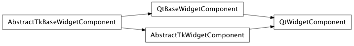
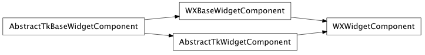

Bases: enaml.components.base_widget_component.BaseWidgetComponent
A BaseWidgetComponent subclass that adds support for a visual toolkit widget information.
Whether or not the widget is enabled.
Whether or not the widget is visible.
The background color of the widget.
The foreground color of the widget.
The font used for the widget.
A property which returns whether or not this component is currently frozen.
An event that should be emitted when the size hint been updated.
Overridden parent class trait
Returns the size hint Size tuple as given by the abstract widget for its current state.
Returns the Rect tuple of layout geometry info as given by the abstract object. It may be different from the value returned by geometry() if the widget’s effective layout rect is different from its paintable rect.
Sets the layout geometry of the internal widget to the given Rect.
Returns the hard minimum Size of the widget, ignoring any windowing decorations. A widget will not be able to be resized smaller than this value
Set the hard minimum Size of the widget, ignoring any windowing decorations. A window will not be able to be resized smaller than this value.
Returns the hard maximum Size of the widget, ignoring any windowing decorations. A widget will not be able to be resized larger than this value
Set the hard maximum Size of the widget, ignoring any windowing decorations. A widget will not be able to be resized larger than this value.
Moves the abstract widget to the given Pos position relative to the its parent’s origin
Set the visibility of the component according to the given boolean. Subclasses that need more control over visibility changes should reimplement this method.
A context manager which disables rendering updates on enter and restores them on exit. The context can be safetly nested.
alias of __NoInterface__

Bases: enaml.backends.qt.qt_base_widget_component.QtBaseWidgetComponent, enaml.components.widget_component.AbstractTkWidgetComponent
A Qt4 implementation of WidgetComponent.
A class attribte which indicates whether or not to use a QWidget item to compute the layout geometry. Subclasses should override as necessary to change the behavior. The default is True.
Creates the underlying Qt widget. As necessary, subclasses should reimplement this method to create different types of widgets.
Returns a (width, height) tuple of integers which represent the suggested size of the widget for its current state, ignoring any windowing decorations. This value is used by the layout manager to determine how much space to allocate the widget.
Returns the (x, y, width, height) to of layout geometry info for the internal toolkit widget. This should ignore any windowing decorations, and may be different than the value returned by geometry() if the widget’s effective layout rect is different from its paintable rect.
Sets the layout geometry of the internal widget to the given x, y, width, and height values. The parameters passed are equivalent semantics to layout_geometry().
Returns an (x, y, width, height) tuple of geometry info for the internal toolkit widget, ignoring any windowing decorations.
Sets the geometry of the internal widget to the given x, y, width, and height values, ignoring any windowing decorations.
Returns the hard minimum (width, height) of the widget, ignoring any windowing decorations. A widget will not be able to be resized smaller than this value
Set the hard minimum width and height of the widget, ignoring any windowing decorations. A widget will not be able to be resized smaller than this value.
Returns the hard maximum (width, height) of the widget, ignoring any windowing decorations. A widget will not be able to be resized larger than this value
Set the hard maximum width and height of the widget, ignoring any windowing decorations. A widget will not be able to be resized larger than this value.
Returns the size of the internal toolkit widget, ignoring any windowing decorations, as a (width, height) tuple of integers.
Resizes the internal toolkit widget according the given width and height integers, ignoring any windowing decorations.
Returns the position of the internal toolkit widget as an (x, y) tuple of integers, including any windowing decorations. The coordinates should be relative to the origin of the widget’s parent, or to the screen if the widget is toplevel.
Moves the internal toolkit widget according to the given x and y integers which are relative to the origin of the widget’s parent and includes any windowing decorations.
The change handler for the ‘enabled’ attribute on the shell object.
The change handler for the ‘bgcolor’ attribute on the shell object. Sets the background color of the internal widget to the given color.
The change handler for the ‘fgcolor’ attribute on the shell object. Sets the foreground color of the internal widget to the given color.
The change handler for the ‘font’ attribute on the shell object. Sets the font of the internal widget to the given font.
Sets the background color of the widget to an appropriate QColor given the provided Enaml Color object.

Bases: enaml.backends.wx.wx_base_widget_component.WXBaseWidgetComponent, enaml.components.widget_component.AbstractTkWidgetComponent
A Wx implementation of WidgetComponent.
Creates the underlying Wx widget. As necessary, subclasses should reimplement this method to create different types of widgets.
Returns a (width, height) tuple of integers which represent the suggested size of the widget for its current state, ignoring any windowing decorations. This value is used by the layout manager to determine how much space to allocate the widget.
Returns the (x, y, width, height) to of layout geometry info for the internal toolkit widget. This should ignore any windowing decorations, and may be different than the value returned by geometry() if the widget’s effective layout rect is different from its paintable rect.
Sets the layout geometry of the internal widget to the given x, y, width, and height values. The parameters passed are equivalent semantics to layout_geometry().
Returns an (x, y, width, height) tuple of geometry info for the internal toolkit widget, ignoring any windowing decorations.
Sets the geometry of the internal widget to the given x, y, width, and height values, ignoring any windowing decorations.
Returns the hard minimum (width, height) of the widget, ignoring any windowing decorations. A widget will not be able to be resized smaller than this value
Set the hard minimum width and height of the widget, ignoring any windowing decorations. A widget will not be able to be resized smaller than this value.
Returns the hard maximum (width, height) of the widget, ignoring any windowing decorations. A widget will not be able to be resized larger than this value
Set the hard maximum width and height of the widget, ignoring any windowing decorations. A widget will not be able to be resized larger than this value.
Returns the size of the internal toolkit widget, ignoring any windowing decorations, as a (width, height) tuple of integers.
Resizes the internal toolkit widget according the given width and height integers, ignoring any windowing decorations.
Returns the position of the internal toolkit widget as an (x, y) tuple of integers, including any windowing decorations. The coordinates should be relative to the origin of the widget’s parent, or to the screen if the widget is toplevel.
Moves the internal toolkit widget according to the given x and y integers which are relative to the origin of the widget’s parent and includes any windowing decorations.
The change handler for the ‘enabled’ attribute on the shell object.
The change handler for the ‘bgcolor’ attribute on the shell object. Sets the background color of the internal widget to the given color.
The change handler for the ‘fgcolor’ attribute on the shell object. Sets the foreground color of the internal widget to the given color.
The change handler for the ‘font’ attribute on the shell object. Sets the font of the internal widget to the given font.
Sets the background color of the widget to an appropriate wxColor given the provided Enaml Color object.